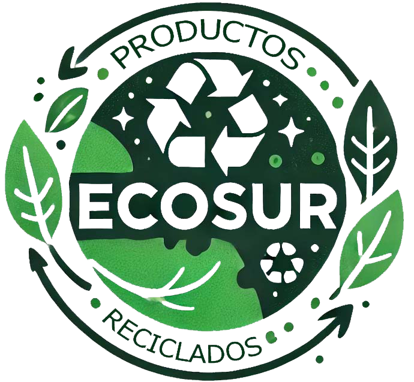

Bienvenidos a ECOSUR, tu tienda de productos reciclados. Nos dedicamos a la creación y venta de artículos únicos, hechos a mano a partir de materiales reciclados, con el objetivo de contribuir al cuidado del medioambiente.
El reciclaje es una de las acciones más importantes que podemos llevar a cabo para reducir el impacto negativo en nuestro planeta. Al reutilizar materiales, disminuimos la cantidad de residuos que terminan en vertederos, reducimos la necesidad de recursos naturales y ayudamos a mitigar el cambio climático. En un mundo donde la contaminación es una amenaza creciente, el reciclaje ofrece una solución accesible y efectiva.
Las consecuencias de la contaminación son devastadoras: océanos llenos de plásticos, ecosistemas en peligro, aire contaminado y un calentamiento global acelerado que afecta tanto a la naturaleza como a la humanidad. Cada año, millones de toneladas de basura se acumulan, destruyendo hábitats y afectando la salud de todas las formas de vida.
En ECOSUR, creemos que el cambio empieza con pequeñas acciones, como la elección de productos sostenibles y el fomento de la cultura del reciclaje. Cada producto que adquieres de nuestra tienda es un paso hacia un futuro más limpio y saludable para todos.